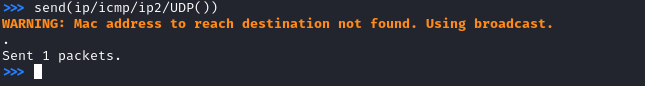
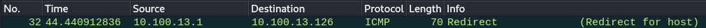
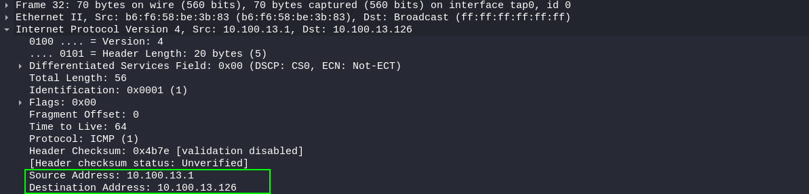
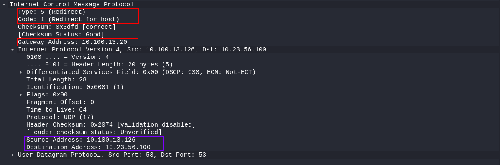

3. Send forged packet and intercept with wireshark
Send the forged packet more then one time
send(ip/icmp/ip2/UDP())
send(ip/icmp/ip2/UDP())
send(ip/icmp/ip2/UDP())
send(ip/icmp/ip2/UDP())
send(ip/icmp/ip2/UDP())

From Wireshark



The circled fields are the ones that we have crafted with scapy before